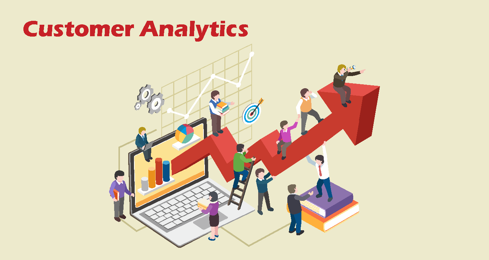
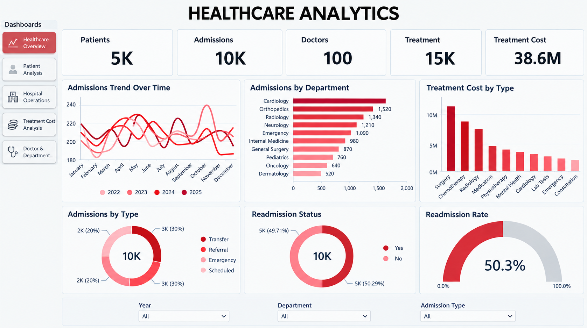
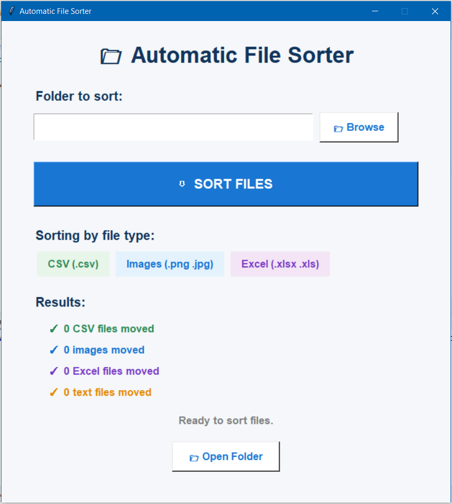
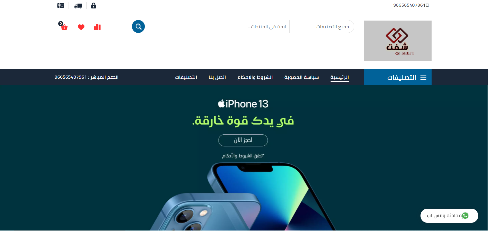

Data Cleaning in SQL
In this project we take raw housing data and transform
it in SQL Server to make it more usable for analysis.
I am a Data Analyst with a strong Software Engineering background, combining expertise in data analysis,
SQL, Python, Excel,
and Power BI with hands-on experience in web and mobile application development.
@AhmedAwwad
In this project we take raw housing data and transform
it in SQL Server to make it more usable for analysis.

SQL-based customer and marketing analytics project exploring customer value, campaign performance, conversion rates, sales trends, and business insights using advanced SQL techniques.
SQL-based e-commerce sales analysis project exploring sales performance, customer behavior, product trends, revenue, and key business insights using advanced SQL techniques.
SQL-based layoffs data analysis project exploring company layoffs, industry trends, workforce reductions, and key patterns using data cleaning and advanced SQL techniques.
In this project we use SQL Server to explore global COVID 19 data.

Power BI data professional survey analysis exploring salaries, job roles, programming languages, job satisfaction, and industry trends through interactive dashboards and visualizations.

Power BI healthcare analytics project exploring patient trends, healthcare costs, treatment outcomes, and key performance indicators through interactive dashboards and data visualization.

Power BI logistics and supply chain analytics project exploring orders, shipping costs, delivery performance, inventory trends, and key operational insights through interactive dashboards.
In this project we scrape data from Amazon to analyze price data for products.

This project automatically organizes and displays files using Python.
Python-based customer churn analysis project exploring customer behavior, churn patterns, retention factors, and high-risk segments through data cleaning, EDA, visualization, and business insights.

Python-based e-commerce sales analysis project exploring sales performance, customer behavior, product trends, revenue patterns, and key business insights through data cleaning, EDA, and visualization.

Python-based marketing campaign analysis project exploring campaign performance, customer engagement, conversion rates, and key marketing insights through data cleaning, EDA, and visualization.

Employee Salary Analysis — Excel dashboard analyzing employee salaries, experience, departments, job roles, education, and gender to uncover key salary trends and insights.

HR Employee Attrition Analysis — Excel dashboard analyzing employee attrition, job satisfaction, salary, departments, overtime, and employee demographics to identify key turnover trends and patterns.

Sales & Profit Analysis — Excel dashboard analyzing sales, profit, products, regions, and customer segments to identify key performance trends and profitability insights.
In this project, we use Flutter to buy and sell furniture and household items.
An app for purchasing meals and food items, and for simplifying the meal booking process.
The project consists of a mobile application for the Al-Qarara Municipality, designed to deliver municipal services anytime and anywhere through a smart approach leveraging various technologies. The application serves diverse groups—including service beneficiaries, the business sector, and citizens—by providing daily municipal news and information on the latest proposed projects.

A website that sells electrical appliances, phones, and smartwatches.